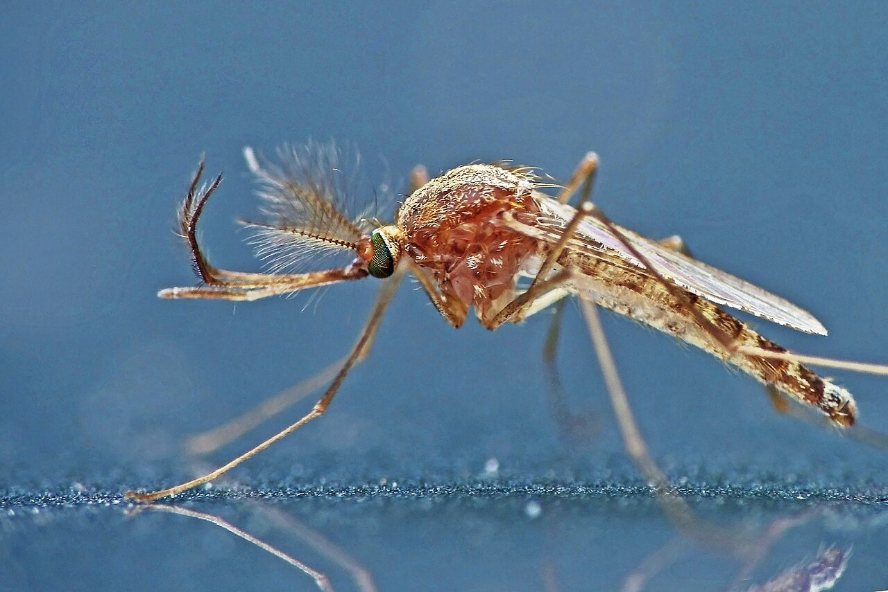
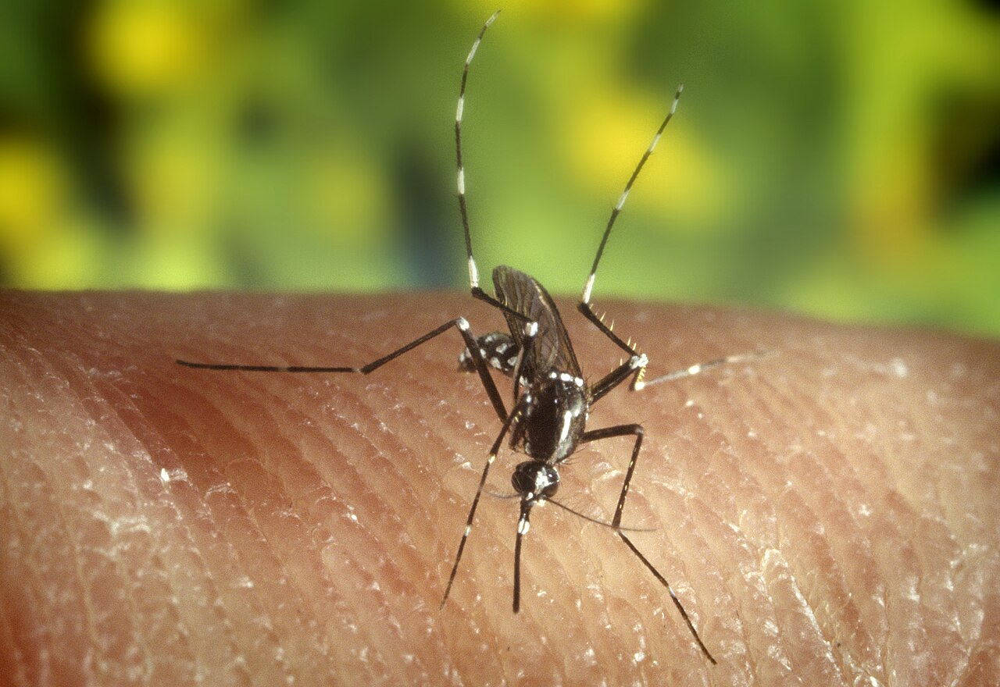
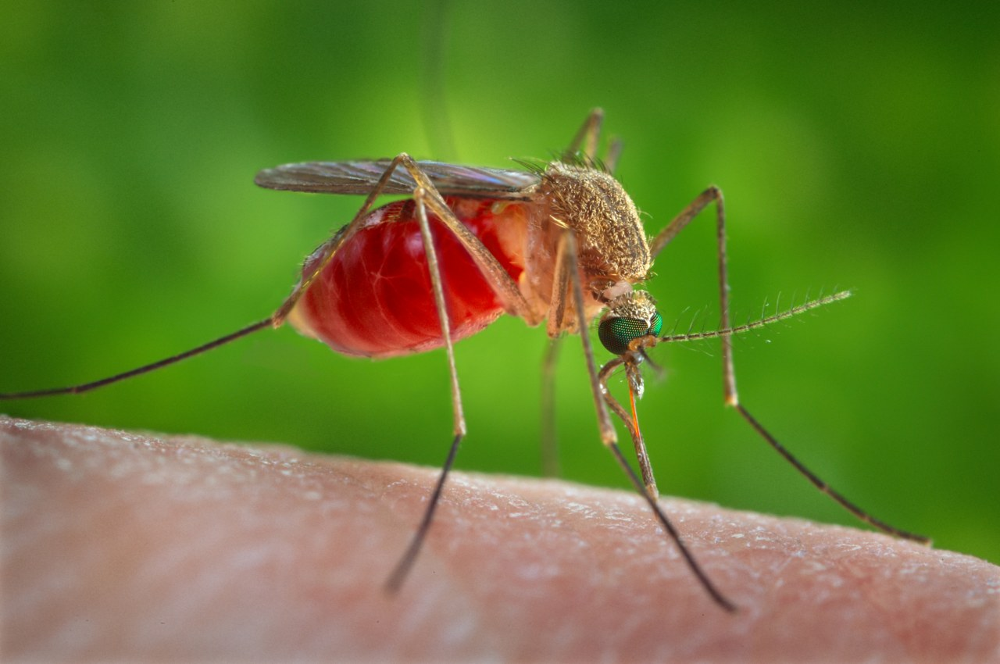
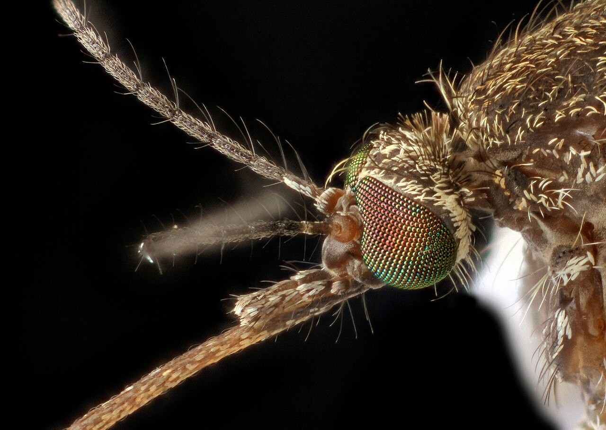
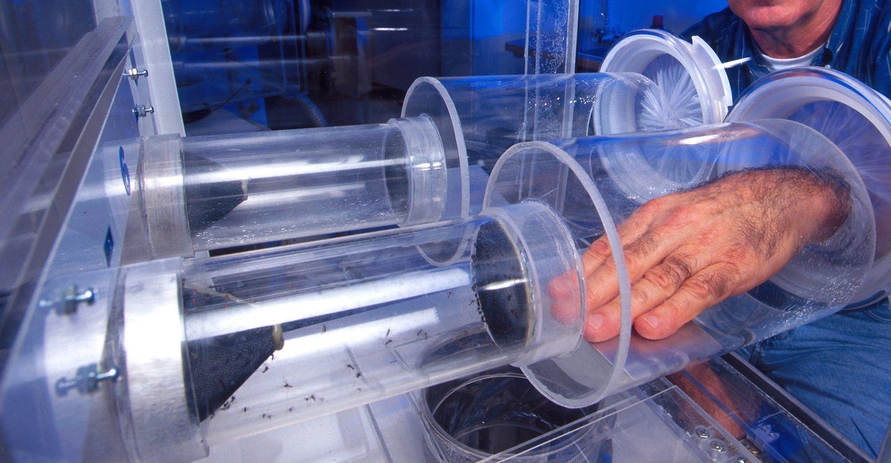
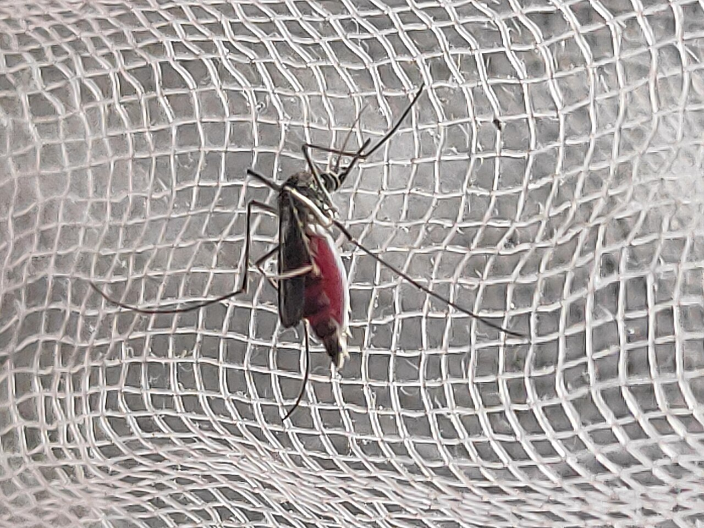

アメリカ・ニューヨーク、2022年10月18日。ロックフェラー大学の研究チームが、科学誌『セル』に1本の論文を発表しました。3年あまりをかけて、64人の腕のにおいを蚊にかぎ比べさせた実験です。結果ははっきりしていました。蚊には、とびきり好きな人がいたのです。
夏の夜、同じ部屋で寝ていたのに、朝起きると自分だけが刺されている。そんな経験はないでしょうか。気のせいだとも、血液型のせいだともいわれてきました。蚊は、いったい何を手がかりに、刺す相手を選んでいるのでしょう。

同じ部屋にいても、刺される人と刺されない人がいます。蚊が人を見つけるまでの段階を流れ図で、「蚊に好かれる人」の実験をグラフで、刺されやすさの説を表で見ていきます。「O型は刺されやすい」は、本当なのでしょうか？
アメリカ・ニューヨーク、2022年10月18日。ロックフェラー大学の研究チームが、科学誌『セル』に1本の論文を発表しました。3年あまりをかけて、64人の腕のにおいを蚊にかぎ比べさせた実験です。結果ははっきりしていました。蚊には、とびきり好きな人がいたのです。
夏の夜、同じ部屋で寝ていたのに、朝起きると自分だけが刺されている。そんな経験はないでしょうか。気のせいだとも、血液型のせいだともいわれてきました。蚊は、いったい何を手がかりに、刺す相手を選んでいるのでしょう。
蚊は、息に含まれる二酸化炭素、目に見える姿、体の熱を、近づくにつれて順に使って人を探します。そして最後の決め手の一つ、肌のにおいは人ごとにちがい、何年も変わりにくいものです。だから、同じ人ばかりが刺されます。
まず、刺すのはどんな蚊かを確かめておきましょう。蚊はオスもメスも、ふだんは花の蜜や植物の汁を吸って暮らしています。人の血を吸うのはメスだけです。血にふくまれるたんぱく質が、卵をつくる材料になるからです。扉の写真の、触角がふさふさした蚊はオスで、人を刺しません。
日本の町でよく人を刺すのは、おもに2種類です。黒い体に白いしま模様のヒトスジシマカは、昼間、とくに朝夕に屋外で刺します。茶色っぽいアカイエカは、昼はあまり動かず、夜に家の中まで入ってきて刺します。昼の公園と夜の寝室では、刺しに来る蚊がちがいます。


蚊が人を見つける方法は、1つではありません。2015年、アメリカのカリフォルニア工科大学などのチームは、風洞（一定の風を流す実験装置）で蚊の飛び方を調べ、距離によって手がかりを使い分ける、という見取り図を示しました。
最初の手がかりは、人がはく息に含まれる二酸化炭素です。研究チームは、蚊が10〜50mほど先から息の流れをとらえ、5〜15mほどで人の姿を目で見つけ、1mを切ると体の熱を感じとる、と考えています。
実験で確かめられたのは、手がかりのつながりです。二酸化炭素をかいだときだけ、蚊は床に置いた黒い目印に寄っていきました。息に含まれる二酸化炭素で「近くに生き物がいる」と知ってから、はじめて目で探しはじめるわけです。
目で探す段階には、色の好みもあります。2022年の研究では、二酸化炭素をかいだ蚊（ネッタイシマカ）は、赤やオレンジ、黒、そしてシアン（青緑）の物に寄っていきました。反対に、紫や青、緑、黄緑には寄りませんでした。
人の肌は、色の濃さにかかわらず、赤〜オレンジの光を多く返します。蚊の目には、肌がよく目立つ色に見えているのでしょう。黒っぽい服が狙われやすいという言い伝えにも、根拠がありそうです。
熱の感じ方については、2024年に別の研究で新しいことがわかりました。カリフォルニア大学サンタバーバラ校のチームが『ネイチャー』に発表した研究です。蚊は触角の先で、温かい物から出る赤外線（目に見えない熱の光）を感じとっていました。
二酸化炭素と人のにおいがある中で、肌と同じ34℃の赤外線を足すと、人を探す動きは約2倍になりました。赤外線だけでは、蚊は動きません。効くのは約70cmまでで、それより近い約10cmからは、肌から立ちのぼる熱気そのものを感じとります。

では、なぜ同じ人ばかりが刺されるのでしょう。冒頭の、ロックフェラー大学レスリー・ヴォスホール教授の研究室の実験に戻ります。参加者は、ナイロンのストッキングでできた筒を両腕にはめてすごし、腕のにおいをしみこませました。
そのナイロンを2人分ずつ装置に入れ、蚊がどちらに集まるかを比べます。使ったのはネッタイシマカ。デング熱などをうつす、熱帯の蚊です。チームはまず8人で総当たり戦をし、そのあと残りの参加者のにおいも加えて調べました。最初の8人では、「33番」と呼ばれた参加者が、ほぼすべての勝負で勝ちました。
33番の点数は、2位の人の約4倍。最下位の2人とくらべると、100倍をこえていました。しかも、この差は一時のものではありません。においを何度集め直しても、よく好かれる人は、何か月たってもよく好かれたままでした。
ちがいを生んでいたのは何でしょう。ナイロンにしみたにおいを分析すると、よく好かれる人ほど、肌から出る「カルボン酸」という成分が多いことがわかりました。肌の脂（皮脂）にふくまれる脂肪酸の仲間で、肌にすむ細菌もその量にかかわっていると、チームは考えています。
ただし、チームはこれで原因が決まったとは言っていません。わかったのは「酸が多い人ほど好かれる」という関係までです。実際、酸が多いのに、あまり好かれない参加者も1人いました。肌のにおいは、何百もの成分が混ざったものです。

肌のにおいは、自分では変えにくいものです。だから虫よけは、においに働きかけます。成分ディートは、蚊のにおいのセンサーを混乱させ、脚でふれても嫌がられるとされます。もう一つの成分イカリジンは、肌のにおいの成分を蒸発しにくくして、蚊に届くにおいそのものを減らします。
刺されやすい人は、においが変わるのを待つより、虫よけをこまめに使うほうが近道でしょう。
肌のにおいのほかにも、刺されやすくなる条件はいくつも調べられています。ただ、確かさには大きな差があります。表にまとめてみましょう。
妊娠は、比較的はっきりした例です。2000年、西アフリカのガンビアで、妊娠中の女性36人とそうでない女性36人をくらべると、妊婦のほうにマラリアを運ぶ蚊が約2倍集まりました。妊娠後期の人は、はく息の量が約2割多く、おなかの温度も約0.7℃高かったと報告されています。
ビールにも研究があります。2002年の実験では、ビール350mLを飲んだ人に、ヒトスジシマカが止まる割合が増えました。ただ、汗に出るアルコールの量や皮膚の温度とは関係がなく、理由はわかりませんでした。
2010年のアフリカ・ブルキナファソの実験でも、ビールを飲んだ人のにおいに、マラリアを運ぶ蚊がよく集まりました。こちらは、息の二酸化炭素や体温では説明がつかないと報告しています。
運動のあとは、息の二酸化炭素も体温も上がります。肌から出る乳酸も、1968年に蚊を引きつける成分として報告されました。理屈の上では狙われやすそうですが、運動そのものの影響を直接くらべた研究は、まだ多くありません。
よく聞く「O型は刺されやすい」はどうでしょう。2004年の研究では、O型の人に止まるヒトスジシマカが多い傾向が出ましたが、はっきりした差があったのはO型とA型のあいだだけでした。ほかに確かな研究は少なく、決着はついていません。

東京の国立感染症研究所の敷地で、12年間に捕れた蚊13,063匹のうち、ヒトスジシマカとアカイエカの仲間が占めた割合。ほかの種類は、合わせても0.3%だった国立感染症研究所、2003〜2014年の調査
ロックフェラー大学の実験の参加者。手首からひじまでのにおいを、ナイロンに6時間しみこませて集めたDe Obaldia ほか、Cell、2022年
同じ実験が続いた期間。そのあいだ、においを集め直しても、好かれやすさの順位はほとんど変わらなかったDe Obaldia ほか、Cell、2022年
ヴォスホール研究室は、もう一歩ふみこみました。遺伝子を操作して、においを感じるための大事な部品（受容体）を持たない蚊をつくり、同じ勝負をさせたのです。
ある部品をなくした蚊は、人のにおいへの反応がにぶりました。それでも、よく好かれる人とそうでない人を、ほぼ同じように選び分けました。別の部品をなくした蚊も、よく好かれる人と好かれない人を、やはり見分けました。
そのわけを説明できるかもしれないのが、同じ年に同じ研究室が発表した別の論文です。蚊のにおいの神経は、多くが何種類もの受容体を持っていました。1つがこわれても、ほかの受容体で人のにおいをとらえられる、二重三重の備えです。
次に自分だけが刺されたら、思い出してください。蚊は気まぐれに選んだのではありません。何十mも先から段階を踏んで近づき、あなたの肌のにおいを確かめて、選んだのです。